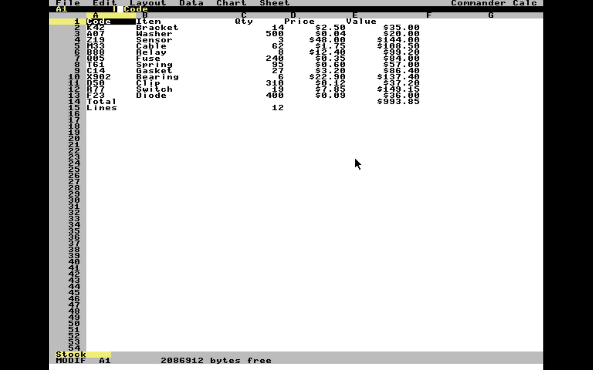
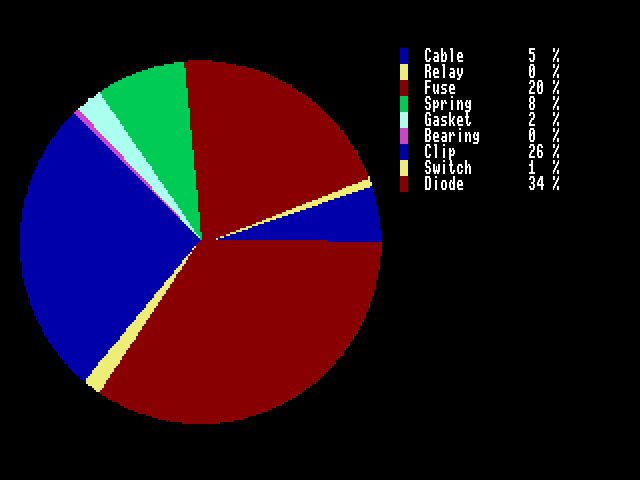

Shouldn't your spreadsheet read the files everybody sends you?
The 6502 has been running spreadsheets since VisiCalc — and every one of them has had the same trouble. Somebody sends you a workbook. You cannot open it. The figures get typed in again by hand, and typed in wrong.
Suppose the budget is due Friday and the numbers arrive as an
.XLSX file. Now you can just open it.
Commander Calc reads and writes Microsoft Excel workbooks right on the machine. No converter. No host program. No serial cable. None of the usual excuses.
And it is a full-function spreadsheet besides, in the line that runs back to 1979. Sixteen worksheets. 65,535 rows. A formula engine with absolute references. Select a block, copy it, paste it. Find and replace. Bar, line and pie charts you can save to the card. All of it off an SD card, on a stock machine, needing nothing else whatsoever.
Six reasons it belongs on your machine
Your work goes where you go.
Here is the part nobody expected. Open a budget prepared this morning on a
modern desktop. Work on it at 8 MHz. Hand it straight back. Import and export
cover .XLSX and .CSV, and there is no step in the
middle.
In a hurry? Save it in the native .X16S format instead. A
500-day price history opens in seventeen seconds — against
fifty-one for the same figures as a spreadsheet file. That is the difference
between a coffee break and getting on with it.
Select. Copy. Paste. Done.
Press Ctrl+A and move the cursor. That's it — that's the whole technique. Every movement key you already know grows the block: arrows, Page Up, Home, End, even a click of the mouse. Highlight a rectangle of any size anywhere on the sheet.
Then take your pick. Copy it. Paste it somewhere else. Clear the lot with a single keystroke. What used to be a cell at a time is now one command, and you'll wonder how you worked without it.
Formulas that know where they've been.
Copy =A1+B1 five rows down and two columns across, and
Commander Calc hands you =C6+D6 — still adding the two cells
above it, exactly where you meant it to. Down, across, both at once. The column
letters carry properly, too: Z plus one is AA, every time.
Need something to stay put? Type a $ and it stays put.
=$A$1 never moves. =$A1 moves its row only.
=A$1 moves its column only. What's more, the same rewriting runs
when you insert a row, delete a row, sort, or undo a sort. Your formulas keep
pointing at the numbers you meant.
Numbers you can bet the quarter on.
Every calculation goes through the machine's own 40-bit floating-point library. And if you ever build a formula that depends on itself, Commander Calc says so, plainly, instead of handing you a plausible-looking number and letting you take it into the meeting.
Ever lost an afternoon's work?
You won't lose one here. Every save is written to a temporary file, read back, and checked against a CRC-32 checksum before it is allowed to replace your workbook. Pull the plug in the middle of one — go on, try it — and yesterday's version is still sitting there, whole.
And this is not an option buried in a preferences screen. It is simply how saving works.
Pictures that make the point.
Put the cursor on a column and choose Bars, Line or Pie. That is the entire procedure. Commander Calc reads down the column, takes the labels from the column beside it, and paints the result as true graphics on the VERA video processor — sixteen colours, and a pie that is an honest circle.
Then press S. Your chart is on the card as a standard Windows
.BMP file that any paint program in the world will open. Try that
on the machine you had last year.
And it all fits.
Under 30K stays in memory. That's it. The formula compiler, the evaluator, the reference rewriter, the spreadsheet reader, the spreadsheet writer, the DEFLATE decoder, the charting engine — every one of them waits on the card in one of seventeen overlays and comes in only when you ask for it.
Which means the memory stays where it belongs. In your worksheet.
See for yourself

Figure 1. Everything where you expect it: six menus across the top, headings that stay put while you scroll, worksheet tabs along the bottom — and Commander Calc telling you exactly how much memory you have left to work in.

Figure 2. One column, one command, and there is your
chart — the key and its percentages taken straight from the column beside
it. Press S and it is on the card as CHART.BMP, ready for
the report.
The numbers behind the numbers
| Capacity | |
|---|---|
| 16 | worksheets per workbook |
| 65,535 × 256 | rows by columns (A through IV) |
| 16,384 | cells per worksheet |
| 8,192 | distinct text strings |
| 128 | cell styles |
| 9 | non-default column widths per sheet |
| Calculation | |
| 14 | built-in functions |
| 8 | number formats |
| 40-bit | floating point, via the machine's ROM library |
| Files | |
| Read | .X16S .XLSX .CSV |
| Write | .X16S .XLSX .CSV .BMP (charts) |
| Charting | |
| 3 | chart types — bar, line, pie |
| 640 × 240 | chart resolution, 16 colours |
Documentation
No thin pamphlet, either. The Commander Calc Reference Manual is the real thing — every command, every key, every function, every message the program can put on screen, and the byte-by-byte layout of the file format itself. Written the way manuals used to be written, back when somebody expected you to read one.
Read the Reference Manual (PDF)
Up and running in minutes
No installer. No configuration. No four-disk shuffle. Copy all eighteen
files — CMDRCALC.PRG and OVL1.BIN through
OVL17.BIN, about 138K the lot — into one directory of a
CMDR-DOS-formatted card. Keep them together, on the one device. Then:
LOAD"CMDRCALC.PRG",8 RUN
And that is genuinely all of it. Working under the emulator instead?
x16emu -rom rom.bin -fsroot . -prg CMDRCALC.PRG -run
{kind=link}